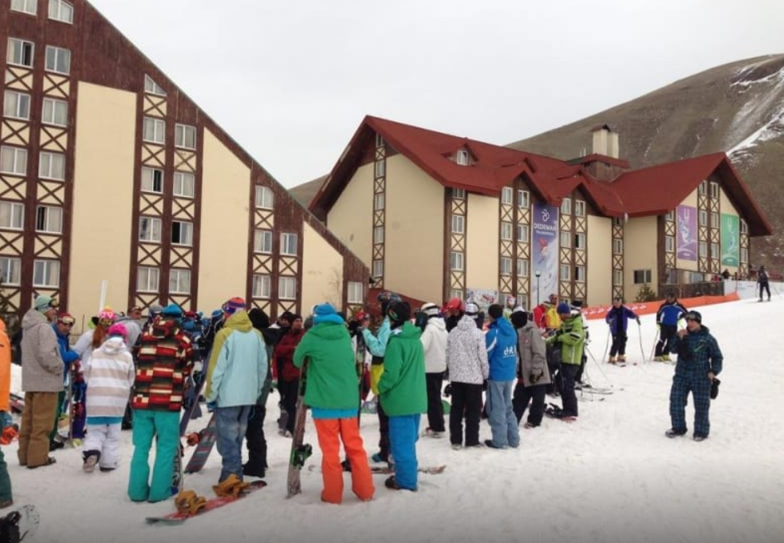
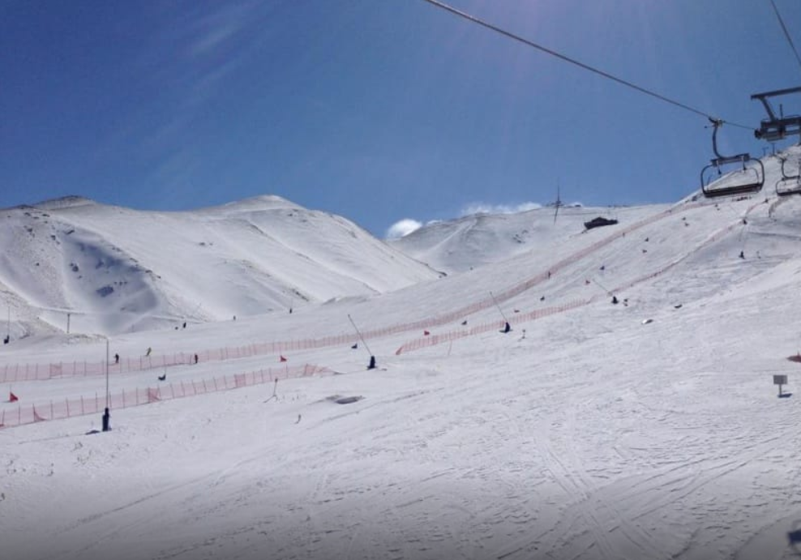

PALANDÖKEN KAYAK MERKEZİ
Palandöken bulunduğu bölge itibarıyla kuru havaya sahiptir. Palandöken Kayak Merkezinde saatte 4500 kişi kapasiteye sahip 5 adet telesiyeji bulunmaktadır. Ayrıca saatte 300 kişi kapasiteye sahip 1 adet teleski bulunmaktadır. Bunun yanı sıra 1800 kişi kapasiteli 2 adet baby lifti ile saatte 1500 kişi kapasiteli 1 adet gondol lifti de bulunan Palandöken çok fazla sporcuyu ağırlamaktadır. Yerli turistin yanı sıra oldukça fazla sayıda yabancı turistin de akın ettiği merkezin tercih edilmesinin en büyük nedeni ise Uludağ ve Kartalkaya’ya nazaran çok daha ekonomik bir tatil ve kayak zevki sunabilmesi.
Palandöken’e Ne Zaman Gidilir ?
Palandöken’de sezon Kasım ayı sonundan neredeyse Mayıs ayı başına kadar devam ediyor. Ancak son yıllarda Uludağ ve Kartalkaya’ya nazaran daha az kar yağışı alması nedeniyle bazı dönemlerde kayakçıların heveslerini bir nebze de olsa kırmıştı. Bu yüzden ocak ve şubat ayları dışında gidilecekse hava şartlarından ve kar durumundan haberdar olmakta fayda var.
Palandöken Kayak Merkezi Pistler
Palandöken’in olimpiyatlara ev sahipliği yapabilmesinin en büyük nedenlerinden birisi hem Dünya’nın en zorlu pistlerine, hem de ilk defa kayak yapacak olanlara uygun pistlere sahip olması. Pistlerin toplam uzunluğu 28 km ve en uzun pistinin uzunluğu 12 kilometreye kadar kesintisiz kayak imkanı sağlayabiliyor. Ejder ve Kapıkaya pistleri ise en zor pistlerden ve müsabakalar için tescil alabilmiş bir kalitede.
Palandöken Kayak Merkezinde Konaklama
Geçmiş yıllarda yetersiz olan konaklama imkanları olimpiyatların ardından oldukça önemli bir aşama kaydetmiş durumda. Hem kayak merkezinde, hem de dağ eteklerinde konaklamak için oldukça fazla alternatif var.
Palandöken Kayak Merkezi Nerede ?
Palandöken Kayak merkezi Erzurum ilimizde bulunmaktadır.Hava alanına 30 dakika sürecek mesafededir. Erzurum Otogarına 20 dakika mesafe uzaklıkta olup, şehir merkeziyle kayak merkezi arasında mesafe 7 kilometredir. Ulaşım şehirden kalkan otobüslerle de gün boyunca sağlanmaktadır.Kendi aracı ile Erzurum’a gelecek olanlar kayak merkezine çok rahat bir şekilde ulaşabilecektir. Şehir merkezinden sadece 5 km uzaklıkta olan merkez için şehrin her yerinden tabelalar yardımı ile yol bulmak mümkün. Otobüsle gelenlerse direk olarak otogardan kayak merkezine giden halk otobüslerini ya da taksileri kullanabilirler. Erzurum Havalimanı’na gelecek olanlarsa 30 dakikalık bir kara yolculuğunun ardından kolaylıkla merkeze ulaşabilecektir.